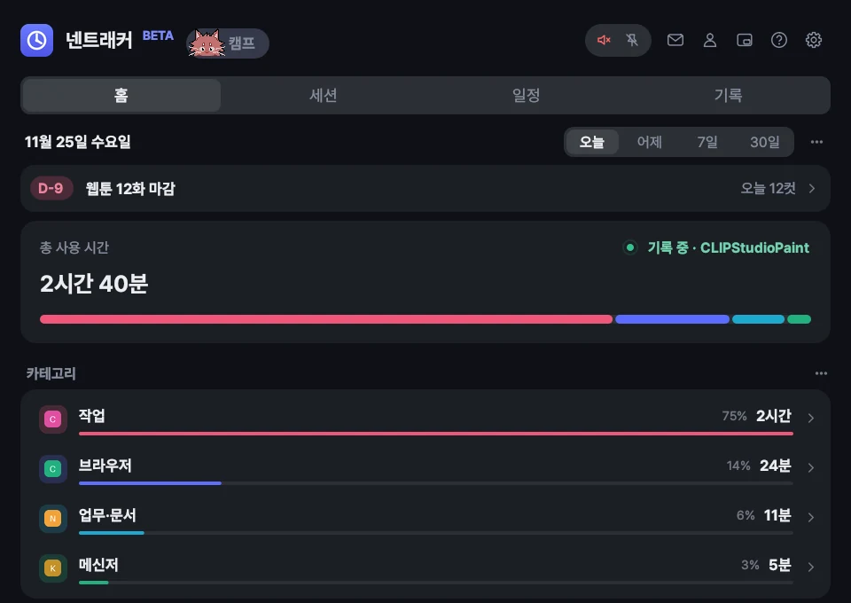
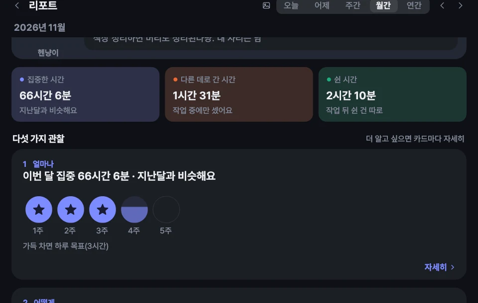
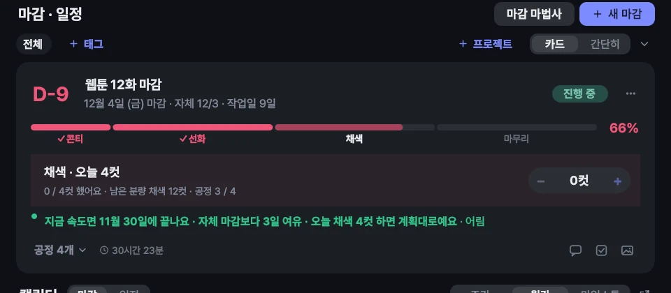
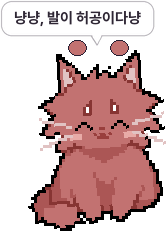
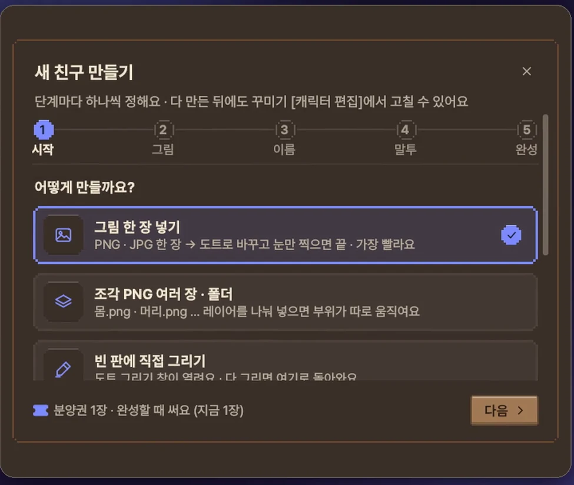
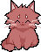

작업한 만큼 모닥불이 자라요
넨트래커는 켜 두기만 하면 작업 시간을 저절로 기록하는 윈도우용 무료 앱이에요. 기록이 쌓일수록 캠핑장 모닥불이 커지고, 헨냥이가 곁에서 응원해요.
무료로 받기켜 두기만 하면 쌓여요
어떤 프로그램과 사이트에서 얼마나 작업했는지 카테고리별로 저절로 모여요. 창 제목은 저장하지 않고, 로그인하지 않으면 기록은 내 컴퓨터에만 있어요.

리포트가 먼저 알아채요
“28분쯤 지나면 다른 창으로 자주 가요”처럼 기록에서 찾은 것을 다섯 가지로 짧게 보여 줘요. 혼내지 않고, 다음에 해 볼 것 하나만 권해요.

마감까지 하루 몫을 나눠요
마감일과 분량을 넣으면 남은 날에 맞춰 오늘 할 몫을 계산해요. 쉬는 날은 빼고 나누고, 계획보다 늦어지면 남은 날에 다시 나눠요.

캠핑장 모닥불은 작업한 시간으로만 자라요. 앱이 또 하나의 딴짓거리가 되지 않게요.
나도 불 피우기 · 무료집중한 시간이 별자리가 돼요
뽀모도로를 시작하면 시간이 흐르는 만큼 별을 이어요. 다 이으면 별자리 하나가 완성돼요. 집중 시간에 맞춰 48개 중 하나가 나와요.
25:00
시작을 누르면 별을 이어요
앱에서는 25분 동안 천천히 이어져요. 여기서는 12초로 빨리 감았어요.
늘 곁에
있는 친구



바탕화면 창 위에 매달려 말을 걸고, 집중할 땐 조용히 응원해요. 내가 그린 도트 캐릭터도 친구로 데려올 수 있어요.
이웃 캠핑장에 놀러 가요
구글로 로그인하면 이웃을 만들 수 있어요. 각자 작업하다가 같은 모닥불 곁에 모여요.
- 놀러 가기 이웃 캠핑장에 내 친구를 데리고 가서 손을 흔들고 장작을 보태요.
- 말풍선 채팅 친구 머리 위로 짧게 말을 주고받아요.
- 같이 듣기 DJ를 맡은 이웃의 음악 앱 소리를 같이 들어요.
- 음성 대화 필요할 때만 마이크를 켜서 이야기해요.
- 단체 뽀모도로 같은 타이머로 함께 집중하고 함께 쉬어요.
순위도 비교도 없어요. 곁에 누가 있다는 것만으로 충분하게요.
혼자 만들고 있어요
안녕하세요, 넨트래커를 만드는 헤넨이에요. 작업하는 시간을 기록하고, 그 시간이 조금 덜 외롭게 흘러가도록 만들고 있어요.
모든 보상은 실제로 작업한 시간에서만 나와요. 별조각도, 모닥불도, 친구의 레벨도요. 앱이 딴짓거리가 되면 안 되니까요.
지금 보이는 그림은 임시 그림이에요. 1.0에서 제가 직접 그린 도트로 바뀌고, 그때까지는 BETA로 둘게요.
넨트래커는 AI의 도움을 받아 만들었어요. 버그나 바라는 점은 앱 안 리포트로 알려 주시면 하나씩 고쳐 갈게요.
헤넨 made by henen
자주 묻는 것
정말 무료인가요? 네, 무료예요. 앱 안 상점은 작업해서 모은 별조각으로만 써요.
어떤 컴퓨터에서 쓰나요? 윈도우 10 · 11 (64비트) PC에서 써요. 맥과 휴대폰 판은 아직 없어요.
기록은 어디에 저장되나요? 로그인하지 않으면 모든 기록이 내 컴퓨터에만 있어요. 창 제목은 저장하지 않고, 사이트는 ‘유튜브’ · ‘기타 사이트’처럼 나눈 이름만 남아요.
로그인은 꼭 해야 하나요? 아니요. 이웃 · 놀러 가기 · 기기 연동을 쓸 때만 구글로 로그인해요. 설정 → 계정에서 계정과 서버 데이터를 언제든 지울 수 있어요.
집중할 때 알림이 방해되지 않나요? 뽀모도로 집중 중에는 알림 창을 띄우지 않아요. 친구도 조용히 응원만 해요.
어떤 작업에 맞나요? 그림 · 웹툰 · 글 · 공부 · 개발처럼 컴퓨터로 하는 일이면 다 돼요. 클립 스튜디오 원고를 띄워 두는 레퍼런스 보드처럼 그리는 사람을 위한 기능도 있어요.
설치할 때 경고가 떠요. 개인이 만든 앱이라 Windows가 ‘알 수 없는 게시자’라고 알릴 수 있어요. [추가 정보] → [실행]을 누르면 설치돼요.
업데이트는 어떻게 받나요? 켤 때와 몇 시간마다 새 버전을 확인해요. 알림의 ‘업데이트’를 누르면 받아서 설치해요.
BETA는 무슨 뜻인가요? 아직 만들어 가는 중이라는 뜻이에요. 그림은 1.0에서 새로 그린 도트로 바뀌어요.
버그는 어디에 알리나요? 앱 안 ‘버그 리포트 · 문의’로 보내 주세요. 로그인하면 보낼 수 있어요.